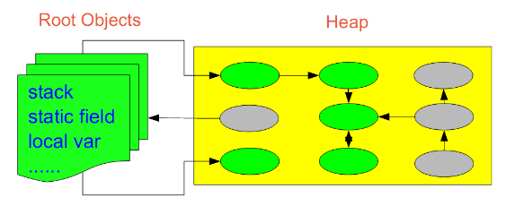
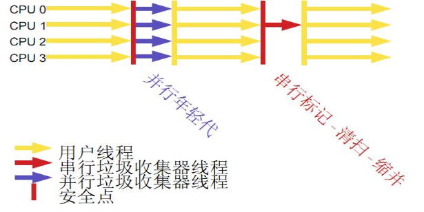

JVM调优总结
目录
数据类型
堆与栈
Java对象的大小
引用类型
按照基本回收策略分
按分区对待的方式分
按系统线程分
如何区分垃圾
如何处理碎片
如何解决同时存在的对象创建和对象回收问题
为什么要分代
如何分代
什么情况下触发垃圾回收
分代垃圾回收流程示意
选择合适的垃圾收集算法
小结
回收器选择
辅助信息
常见配置汇总
调优总结
垃圾回收的瓶颈
增量收集的演进
Garbage Firest（G1）
展望
JVM调优工具
如何调优
线程监控
内存泄漏检查
垃圾回收的悖论
我们的内存中都放了什么
解决之道
目录
数据类型
堆与栈
Java对象的大小
引用类型
按照基本回收策略分
按分区对待的方式分
按系统线程分
如何区分垃圾
如何处理碎片
如何解决同时存在的对象创建和对象回收问题
为什么要分代
如何分代
什么情况下触发垃圾回收
分代垃圾回收流程示意
选择合适的垃圾收集算法
小结
回收器选择
辅助信息
常见配置汇总
调优总结
垃圾回收的瓶颈
增量收集的演进
Garbage Firest（G1）
展望
JVM调优工具
如何调优
线程监控
内存泄漏检查
垃圾回收的悖论
我们的内存中都放了什么
解决之道
转载: JVM调优总结（一）-- 一些概念
转载: JVM调优总结（二）-- 一些概念
转载: JVM调优总结（三）-- 基本垃圾回收算法
转载: JVM调优总结（四）-- 垃圾回收面临的问题
转载: JVM调优总结（五）-- 分代垃圾回收详述1
转载: JVM调优总结（六）-- 分代垃圾回收详述2
转载: JVM调优总结（七）-- 典型配置举例1
转载: JVM调优总结（八）-- 典型配置举例2
转载: JVM调优总结（九）-- 新一代的垃圾回收算法
转载: JVM调优总结（十）-- 调优方法
转载: JVM调优总结（十一）-- 反思
一些概念
数据类型
Java虚拟机中，数据类型可以分为两类：基本类型和引用类型。基本类型的变量保存原始值，即：他代表的值就是数值本身；而引用类型的变量保存引用值。“引用值”代表了某个对象的引用，而不是对象本身，对象本身存放在这个引用值所表示的地址的位置。
基本类型包括：byte,short,int,long,char,float,double,Boolean,returnAddress
引用类型包括：类类型，接口类型和数组。
堆与栈
堆和栈是程序运行的关键，很有必要把他们的关系说清楚。

栈是运行时的单位，而堆是存储的单位。
栈解决程序的运行问题，即程序如何执行，或者说如何处理数据；堆解决的是数据存储的问题，即数据怎么放、放在哪儿。
在Java中一个线程就会相应有一个线程栈与之对应，这点很容易理解，因为不同的线程执行逻辑有所不同，因此需要一个独立的线程栈。而堆则是所有线程共享的。栈因为是运行单位，因此里面存储的信息都是跟当前线程（或程序）相关信息的。包括局部变量、程序运行状态、方法返回值等等；而堆只负责存储对象信息。
为什么要把堆和栈区分出来呢？栈中不是也可以存储数据吗？
第一，从软件设计的角度看，栈代表了处理逻辑，而堆代表了数据。这样分开，使得处理逻辑更为清晰。分而治之的思想。这种隔离、模块化的思想在软件设计的方方面面都有体现。
第二，堆与栈的分离，使得堆中的内容可以被多个栈共享（也可以理解为多个线程访问同一个对象）。这种共享的收益是很多的。一方面这种共享提供了一种有效的数据交互方式(如：共享内存)，另一方面，堆中的共享常量和缓存可以被所有栈访问，节省了空间。
第三，栈因为运行时的需要，比如保存系统运行的上下文，需要进行地址段的划分。由于栈只能向上增长，因此就会限制住栈存储内容的能力。而堆不同，堆中的对象是可以根据需要动态增长的，因此栈和堆的拆分，使得动态增长成为可能，相应栈中只需记录堆中的一个地址即可。
第四，面向对象就是堆和栈的完美结合。其实，面向对象方式的程序与以前结构化的程序在执行上没有任何区别。但是，面向对象的引入，使得对待问题的思考方式发生了改变，而更接近于自然方式的思考。当我们把对象拆开，你会发现，对象的属性其实就是数据，存放在堆中；而对象的行为（方法），就是运行逻辑，放在栈中。我们在编写对象的时候，其实即编写了数据结构，也编写的处理数据的逻辑。不得不承认，面向对象的设计，确实很美。
在Java中，Main函数就是栈的起始点，也是程序的起始点。
程序要运行总是有一个起点的。同C语言一样，java中的Main就是那个起点。无论什么java程序，找到main就找到了程序执行的入口：）
堆中存什么？栈中存什么？
堆中存的是对象。栈中存的是基本数据类型和堆中对象的引用。一个对象的大小是不可估计的，或者说是可以动态变化的，但是在栈中，一个对象只对应了一个4btye的引用（堆栈分离的好处：））。
为什么不把基本类型放堆中呢？因为其占用的空间一般是1~8个字节——需要空间比较少，而且因为是基本类型，所以不会出现动态增长的情况——长度固定，因此栈中存储就够了，如果把他存在堆中是没有什么意义的（还会浪费空间，后面说明）。可以这么说，基本类型和对象的引用都是存放在栈中，而且都是几个字节的一个数，因此在程序运行时，他们的处理方式是统一的。但是基本类型、对象引用和对象本身就有所区别了，因为一个是栈中的数据一个是堆中的数据。最常见的一个问题就是，Java中参数传递时的问题。
Java中的参数传递时传值呢？还是传引用？
要说明这个问题，先要明确两点：
1. 不要试图与C进行类比，Java中没有指针的概念
2. 程序运行永远都是在栈中进行的，因而参数传递时，只存在传递基本类型和对象引用的问题。不会直接传对象本身。
明确以上两点后。Java在方法调用传递参数时，因为没有指针，所以它都是进行传值调用（这点可以参考C的传值调用）。因此，很多书里面都说Java是进行传值调用，这点没有问题，而且也简化的C中复杂性。
但是传引用的错觉是如何造成的呢？在运行栈中，基本类型和引用的处理是一样的，都是传值，所以，如果是传引用的方法调用，也同时可以理解为“传引用值”的传值调用，即引用的处理跟基本类型是完全一样的。但是当进入被调用方法时，被传递的这个引用的值，被程序解释（或者查找）到堆中的对象，这个时候才对应到真正的对象。如果此时进行修改，修改的是引用对应的对象，而不是引用本身，即：修改的是堆中的数据。所以这个修改是可以保持的了。
对象，从某种意义上说，是由基本类型组成的。可以把一个对象看作为一棵树，对象的属性如果还是对象，则还是一颗树（即非叶子节点），基本类型则为树的叶子节点。程序参数传递时，被传递的值本身都是不能进行修改的，但是，如果这个值是一个非叶子节点（即一个对象引用），则可以修改这个节点下面的所有内容。
堆和栈中，栈是程序运行最根本的东西。程序运行可以没有堆，但是不能没有栈。而堆是为栈进行数据存储服务，说白了堆就是一块共享的内存。不过，正是因为堆和栈的分离的思想，才使得Java的垃圾回收成为可能。
Java中，栈的大小通过-Xss来设置，当栈中存储数据比较多时，需要适当调大这个值，否则会出现java.lang.StackOverflowError异常。常见的出现这个异常的是无法返回的递归，因为此时栈中保存的信息都是方法返回的记录点。
Java对象的大小
基本数据的类型的大小是固定的，这里就不多说了。对于非基本类型的Java对象，其大小就值得商榷。
在Java中，一个空Object对象的大小是8byte，这个大小只是保存堆中一个没有任何属性的对象的大小。看下面语句：
Object ob = new Object();这样在程序中完成了一个Java对象的生命，但是它所占的空间为：4byte+8byte。4byte是上面部分所说的Java栈中保存引用的所需要的空间。而那8byte则是Java堆中对象的信息。因为所有的Java非基本类型的对象都需要默认继承Object对象，因此不论什么样的Java对象，其大小都必须是大于8byte。
有了Object对象的大小，我们就可以计算其他对象的大小了。
Class NewObject {
int count;
boolean flag;
Object ob;
}
其大小为：空对象大小(8byte)+int大小(4byte)+Boolean大小(1byte)+空Object引用的大小(4byte)=17byte。但是因为Java在对对象内存分配时都是以8的整数倍来分，因此大于17byte的最接近8的整数倍的是24，因此此对象的大小为24byte。这里需要注意一下基本类型的包装类型的大小。因为这种包装类型已经成为对象了，因此需要把他们作为对象来看待。包装类型的大小至少是12byte（声明一个空Object至少需要的空间），而且12byte没有包含任何有效信息，同时，因为Java对象大小是8的整数倍，因此一个基本类型包装类的大小至少是16byte。这个内存占用是很恐怖的，它是使用基本类型的N倍（N>2），有些类型的内存占用更是夸张（随便想下就知道了）。因此，可能的话应尽量少使用包装类。在JDK5.0以后，因为加入了自动类型装换，因此，Java虚拟机会在存储方面进行相应的优化。
引用类型
对象引用类型分为强引用、软引用、弱引用和虚引用。
强引用:就是我们一般声明对象是时虚拟机生成的引用，强引用环境下，垃圾回收时需要严格判断当前对象是否被强引用，如果被强引用，则不会被垃圾回收
软引用:软引用一般被做为缓存来使用。与强引用的区别是，软引用在垃圾回收时，虚拟机会根据当前系统的剩余内存来决定是否对软引用进行回收。如果剩余内存比较紧张，则虚拟机会回收软引用所引用的空间；如果剩余内存相对富裕，则不会进行回收。换句话说，虚拟机在发生OutOfMemory时，肯定是没有软引用存在的。
弱引用:弱引用与软引用类似，都是作为缓存来使用。但与软引用不同，弱引用在进行垃圾回收时，是一定会被回收掉的，因此其生命周期只存在于一个垃圾回收周期内。
强引用不用说，我们系统一般在使用时都是用的强引用。而“软引用”和“弱引用”比较少见。他们一般被作为缓存使用，而且一般是在内存大小比较受限的情况下做为缓存。因为如果内存足够大的话，可以直接使用强引用作为缓存即可，同时可控性更高。因而，他们常见的是被使用在桌面应用系统的缓存。
可以从不同的的角度去划分垃圾回收算法：
按照基本回收策略分
引用计数（Reference Counting）:
比较古老的回收算法。原理是此对象有一个引用，即增加一个计数，删除一个引用则减少一个计数。垃圾回收时，只用收集计数为0的对象。此算法最致命的是无法处理循环引用的问题。
标记-清除（Mark-Sweep）:

此算法执行分两阶段。第一阶段从引用根节点开始标记所有被引用的对象，第二阶段遍历整个堆，把未标记的对象清除。此算法需要暂停整个应用，同时，会产生内存碎片。
复制（Copying）:

此算法把内存空间划为两个相等的区域，每次只使用其中一个区域。垃圾回收时，遍历当前使用区域，把正在使用中的对象复制到另外一个区域中。次算法每次只处理正在使用中的对象，因此复制成本比较小，同时复制过去以后还能进行相应的内存整理，不会出现“碎片”问题。当然，此算法的缺点也是很明显的，就是需要两倍内存空间。
标记-整理（Mark-Compact）:
此算法结合了“标记-清除”和“复制”两个算法的优点。也是分两阶段，第一阶段从根节点开始标记所有被引用对象，第二阶段遍历整个堆，把清除未标记对象并且把存活对象“压缩”到堆的其中一块，按顺序排放。此算法避免了“标记-清除”的碎片问题，同时也避免了“复制”算法的空间问题。
按分区对待的方式分
增量收集（Incremental Collecting）:实时垃圾回收算法，即：在应用进行的同时进行垃圾回收。不知道什么原因JDK5.0中的收集器没有使用这种算法的。
分代收集（Generational Collecting）:基于对对象生命周期分析后得出的垃圾回收算法。把对象分为年青代、年老代、持久代，对不同生命周期的对象使用不同的算法（上述方式中的一个）进行回收。现在的垃圾回收器（从J2SE1.2开始）都是使用此算法的。
按系统线程分
串行收集:串行收集使用单线程处理所有垃圾回收工作, 因为无需多线程交互，实现容易，而且效率比较高。但是，其局限性也比较明显，即无法使用多处理器的优势，所以此收集适合单处理器机器。当然，此收集器也可以用在小数据量（100M左右）情况下的多处理器机器上。
并行收集:并行收集使用多线程处理垃圾回收工作，因而速度快，效率高。而且理论上CPU数目越多，越能体现出并行收集器的优势。
并发收集:相对于串行收集和并行收集而言，前面两个在进行垃圾回收工作时，需要暂停整个运行环境，而只有垃圾回收程序在运行，因此，系统在垃圾回收时会有明显的暂停，而且暂停时间会因为堆越大而越长。
如何区分垃圾
上面说到的“引用计数”法，通过统计控制生成对象和删除对象时的引用数来判断。垃圾回收程序收集计数为0的对象即可。但是这种方法无法解决循环引用。所以，后来实现的垃圾判断算法中，都是从程序运行的根节点出发，遍历整个对象引用，查找存活的对象。那么在这种方式的实现中，垃圾回收从哪儿开始的呢？即，从哪儿开始查找哪些对象是正在被当前系统使用的。上面分析的堆和栈的区别，其中栈是真正进行程序执行地方，所以要获取哪些对象正在被使用，则需要从Java栈开始。同时，一个栈是与一个线程对应的，因此，如果有多个线程的话，则必须对这些线程对应的所有的栈进行检查。

同时，除了栈外，还有系统运行时的寄存器等，也是存储程序运行数据的。这样，以栈或寄存器中的引用为起点，我们可以找到堆中的对象，又从这些对象找到对堆中其他对象的引用，这种引用逐步扩展，最终以null引用或者基本类型结束，这样就形成了一颗以Java栈中引用所对应的对象为根节点的一颗对象树，如果栈中有多个引用，则最终会形成多颗对象树。在这些对象树上的对象，都是当前系统运行所需要的对象，不能被垃圾回收。而其他剩余对象，则可以视为无法被引用到的对象，可以被当做垃圾进行回收。
因此，垃圾回收的起点是一些根对象（java栈, 静态变量, 寄存器...）。而最简单的Java栈就是Java程序执行的main函数。这种回收方式，也是上面提到的“标记-清除”的回收方式
如何处理碎片
由于不同Java对象存活时间是不一定的，因此，在程序运行一段时间以后，如果不进行内存整理，就会出现零散的内存碎片。碎片最直接的问题就是会导致无法分配大块的内存空间，以及程序运行效率降低。所以，在上面提到的基本垃圾回收算法中，“复制”方式和“标记-整理”方式，都可以解决碎片的问题。
如何解决同时存在的对象创建和对象回收问题
垃圾回收线程是回收内存的，而程序运行线程则是消耗（或分配）内存的，一个回收内存，一个分配内存，从这点看，两者是矛盾的。因此，在现有的垃圾回收方式中，要进行垃圾回收前，一般都需要暂停整个应用（即：暂停内存的分配），然后进行垃圾回收，回收完成后再继续应用。这种实现方式是最直接，而且最有效的解决二者矛盾的方式。
但是这种方式有一个很明显的弊端，就是当堆空间持续增大时，垃圾回收的时间也将会相应的持续增大，对应应用暂停的时间也会相应的增大。一些对相应时间要求很高的应用，比如最大暂停时间要求是几百毫秒，那么当堆空间大于几个G时，就很有可能超过这个限制，在这种情况下，垃圾回收将会成为系统运行的一个瓶颈。为解决这种矛盾，有了并发垃圾回收算法，使用这种算法，垃圾回收线程与程序运行线程同时运行。在这种方式下，解决了暂停的问题，但是因为需要在新生成对象的同时又要回收对象，算法复杂性会大大增加，系统的处理能力也会相应降低，同时，“碎片”问题将会比较难解决。
为什么要分代
分代的垃圾回收策略，是基于这样一个事实：不同的对象的生命周期是不一样的。因此，不同生命周期的对象可以采取不同的收集方式，以便提高回收效率。
在Java程序运行的过程中，会产生大量的对象，其中有些对象是与业务信息相关，比如Http请求中的Session对象、线程、Socket连接，这类对象跟业务直接挂钩，因此生命周期比较长。但是还有一些对象，主要是程序运行过程中生成的临时变量，这些对象生命周期会比较短，比如：String对象，由于其不变类的特性，系统会产生大量的这些对象，有些对象甚至只用一次即可回收。
试想，在不进行对象存活时间区分的情况下，每次垃圾回收都是对整个堆空间进行回收，花费时间相对会长，同时，因为每次回收都需要遍历所有存活对象，但实际上，对于生命周期长的对象而言，这种遍历是没有效果的，因为可能进行了很多次遍历，但是他们依旧存在。因此，分代垃圾回收采用分治的思想，进行代的划分，把不同生命周期的对象放在不同代上，不同代上采用最适合它的垃圾回收方式进行回收。
如何分代

如图所示：
虚拟机中的共划分为三个代：年轻代（Young Generation）、年老点（Old Generation）和持久代（Permanent Generation）。其中持久代主要存放的是Java类的类信息，与垃圾收集要收集的Java对象关系不大。年轻代和年老代的划分是对垃圾收集影响比较大的。
年轻代:
所有新生成的对象首先都是放在年轻代的。年轻代的目标就是尽可能快速的收集掉那些生命周期短的对象。年轻代分三个区。一个Eden区，两个Survivor区(一般而言)。大部分对象在Eden区中生成。当Eden区满时，还存活的对象将被复制到Survivor区（两个中的一个），当这个Survivor区满时，此区的存活对象将被复制到另外一个Survivor区，当这个Survivor去也满了的时候，从第一个Survivor区复制过来的并且此时还存活的对象，将被复制“年老区(Tenured)”。需要注意，Survivor的两个区是对称的，没先后关系，所以同一个区中可能同时存在从Eden复制过来 对象，和从前一个Survivor复制过来的对象，而复制到年老区的只有从第一个Survivor去过来的对象。而且，Survivor区总有一个是空的。同时，根据程序需要，Survivor区是可以配置为多个的（多于两个），这样可以增加对象在年轻代中的存在时间，减少被放到年老代的可能。
年老代:
在年轻代中经历了N次垃圾回收后仍然存活的对象，就会被放到年老代中。因此，可以认为年老代中存放的都是一些生命周期较长的对象。
持久代:
用于存放静态文件，如今Java类、方法等。持久代对垃圾回收没有显著影响，但是有些应用可能动态生成或者调用一些class，例如Hibernate等，在这种时候需要设置一个比较大的持久代空间来存放这些运行过程中新增的类。持久代大小通过-XX:MaxPermSize=
什么情况下触发垃圾回收
由于对象进行了分代处理，因此垃圾回收区域、时间也不一样。GC有两种类型：Scavenge GC和Full GC。
Scavenge GC
一般情况下，当新对象生成，并且在Eden申请空间失败时，就会触发Scavenge GC，对Eden区域进行GC，清除非存活对象，并且把尚且存活的对象移动到Survivor区。然后整理Survivor的两个区。这种方式的GC是对年轻代的Eden区进行，不会影响到年老代。因为大部分对象都是从Eden区开始的，同时Eden区不会分配的很大，所以Eden区的GC会频繁进行。因而，一般在这里需要使用速度快、效率高的算法，使Eden去能尽快空闲出来。
Full GC
对整个堆进行整理，包括Young、Tenured和Perm。Full GC因为需要对整个对进行回收，所以比Scavenge GC要慢，因此应该尽可能减少Full GC的次数。在对JVM调优的过程中，很大一部分工作就是对于FullGC的调节。有如下原因可能导致Full GC：
· 年老代（Tenured）被写满
· 持久代（Perm）被写满
· System.gc()被显示调用
·上一次GC之后Heap的各域分配策略动态变化分代垃圾回收流程示意
选择合适的垃圾收集算法

用单线程处理所有垃圾回收工作，因为无需多线程交互，所以效率比较高。但是，也无法使用多处理器的优势，所以此收集器适合单处理器机器。当然，此收集器也可以用在小数据量（100M左右）情况下的多处理器机器上。可以使用-XX:+UseSerialGC打开。

对年轻代进行并行垃圾回收，因此可以减少垃圾回收时间。一般在多线程多处理器机器上使用。使用-XX:+UseParallelGC.打开。并行收集器在J2SE5.0第六6更新上引入，在Java SE6.0中进行了增强--可以对年老代进行并行收集。如果年老代不使用并发收集的话，默认是使用单线程进行垃圾回收，因此会制约扩展能力。使用-XX:+UseParallelOldGC打开。
使用-XX:ParallelGCThreads=
此收集器可以进行如下配置：
最大垃圾回收暂停:指定垃圾回收时的最长暂停时间，通过-XX:MaxGCPauseMillis=指定。>为毫秒.如果指定了此值的话，堆大小和垃圾回收相关参数会进行调整以达到指定值。设定此值可能会减少应用的吞吐量。
吞吐量:吞吐量为垃圾回收时间与非垃圾回收时间的比值，通过-XX:GCTimeRatio=来设定，公>式为1/（1+N）。例如，-XX:GCTimeRatio=19时，表示5%的时间用于垃圾回收。默认情况为99，即>1%的时间用于垃圾回收。
并发收集器
可以保证大部分工作都并发进行（应用不停止），垃圾回收只暂停很少的时间，此收集器适合对响应时间要求比较高的中、大规模应用。使用-XX:+UseConcMarkSweepGC打开。

并发收集器主要减少年老代的暂停时间，他在应用不停止的情况下使用独立的垃圾回收线程，跟踪可达对象。在每个年老代垃圾回收周期中，在收集初期并发收集器 会对整个应用进行简短的暂停，在收集中还会再暂停一次。第二次暂停会比第一次稍长，在此过程中多个线程同时进行垃圾回收工作。
并发收集器使用处理器换来短暂的停顿时间。在一个N个处理器的系统上，并发收集部分使用K/N个可用处理器进行回收，一般情况下1<=K<=N/4。
在只有一个处理器的主机上使用并发收集器，设置为incremental mode模式也可获得较短的停顿时间。
浮动垃圾：由于在应用运行的同时进行垃圾回收，所以有些垃圾可能在垃圾回收进行完成时产生，这样就造成了“Floating Garbage”，这些垃圾需要在下次垃圾回收周期时才能回收掉。所以，并发收集器一般需要20%的预留空间用于这些浮动垃圾。
Concurrent Mode Failure：并发收集器在应用运行时进行收集，所以需要保证堆在垃圾回收的这段时间有足够的空间供程序使用，否则，垃圾回收还未完成，堆空间先满了。这种情况下将会发生“并发模式失败”，此时整个应用将会暂停，进行垃圾回收。
启动并发收集器：因为并发收集在应用运行时进行收集，所以必须保证收集完成之前有足够的内存空间供程序使用，否则会出现“Concurrent Mode Failure”。通过设置-XX:CMSInitiatingOccupancyFraction=
小结
串行处理器：
- 适用情况：数据量比较小（100M左右）；单处理器下并且对响应时间无要求的应用。
- 缺点：只能用于小型应用
并行处理器：
- 适用情况：“对吞吐量有高要求”，多CPU、对应用响应时间无要求的中、大型应用。举例：后台处理、科学计算。
- 缺点：垃圾收集过程中应用响应时间可能加长
并发处理器：
- 适用情况：“对响应时间有高要求”，多CPU、对应用响应时间有较高要求的中、大型应用。举例：Web服务器/应用服务器、电信交换、集成开发环境。
以下配置主要针对分代垃圾回收算法而言。
##堆大小设置
年轻代的设置很关键
JVM中最大堆大小有三方面限制：相关操作系统的数据模型（32-bt还是64-bit）限制；系统的可用虚拟内存限制；系统的可用物理内存限制。32位系统下，一般限制在1.5G~2G；64为操作系统对内存无限制。在Windows Server 2003 系统，3.5G物理内存，JDK5.0下测试，最大可设置为1478m。
典型设置：
java -Xmx3550m -Xms3550m -Xmn2g –Xss128k
-Xmx3550m：设置JVM最大可用内存为3550M。
-Xms3550m：设置JVM促使内存为3550m。此值可以设置与-Xmx相同，以避免每次垃圾回收完成后JVM重新分配内存。
-Xmn2g：设置年轻代大小为2G。整个堆大小=年轻代大小 + 年老代大小 + 持久代大小。持久代一般固定大小为64m，所以增大年轻代后，将会减小年老代大小。此值对系统性能影响较大，Sun官方推荐配置为整个堆的3/8。
-Xss128k：设置每个线程的堆栈大小。JDK5.0以后每个线程堆栈大小为1M，以前每个线程堆栈大小为256K。更具应用的线程所需内存大小进行调整。在相同物理内存下，减小这个值能生成更多的线程。但是操作系统对一个进程内的线程数还是有限制的，不能无限生成，经验值在3000~5000左右。java -Xmx3550m -Xms3550m -Xss128k -XX:NewRatio=4 -XX:SurvivorRatio=4 -XX:MaxPermSize=16m -XX:MaxTenuringThreshold=0
-XX:NewRatio=4:设置年轻代（包括Eden和两个Survivor区）与年老代的比值（除去持久代）。设置为4，则年轻代与年老代所占比值为1：4，年轻代占整个堆栈的1/5
-XX:SurvivorRatio=4：设置年轻代中Eden区与Survivor区的大小比值。设置为4，则两个Survivor区与一个Eden区的比值为2:4，一个Survivor区占整个年轻代的1/6
-XX:MaxPermSize=16m:设置持久代大小为16m。
-XX:MaxTenuringThreshold=0：设置垃圾最大年龄。如果设置为0的话，则年轻代对象不经过Survivor区，直接进入年老代。对于年老代比较多的应用，可以提高效率。如果将此值设置为一个较大值，则年轻代对象会在Survivor区进行多次复制，这样可以增加对象再年轻代的存活时间，增加在年轻代即被回收的概论。回收器选择
JVM给了三种选择：串行收集器、并行收集器、并发收集器，但是串行收集器只适用于小数据量的情况，所以这里的选择主要针对并行收集器和并发收集器。默认情况下，JDK5.0以前都是使用串行收集器，如果想使用其他收集器需要在启动时加入相应参数。JDK5.0以后，JVM会根据当前系统配置进行判断。
吞吐量优先的并行收集器
如上文所述，并行收集器主要以到达一定的吞吐量为目标，适用于科学技术和后台处理等。
典型配置：
java -Xmx3800m -Xms3800m -Xmn2g -Xss128k -XX:+UseParallelGC -XX:ParallelGCThreads=20
-XX:+UseParallelGC：选择垃圾收集器为并行收集器。此配置仅对年轻代有效。即上述配置下，年轻代使用并发收集，而年老代仍旧使用串行收集。
-XX:ParallelGCThreads=20：配置并行收集器的线程数，即：同时多少个线程一起进行垃圾回收。此值最好配置与处理器数目相等。java -Xmx3550m -Xms3550m -Xmn2g -Xss128k -XX:+UseParallelGC -XX:ParallelGCThreads=20 -XX:+UseParallelOldGC
-XX:+UseParallelOldGC：配置年老代垃圾收集方式为并行收集。JDK6.0支持对年老代并行收集。java -Xmx3550m -Xms3550m -Xmn2g -Xss128k -XX:+UseParallelGC -XX:MaxGCPauseMillis=100
-XX:MaxGCPauseMillis=100:设置每次年轻代垃圾回收的最长时间，如果无法满足此时间，JVM会自动调整年轻代大小，以满足此值。n java -Xmx3550m -Xms3550m -Xmn2g -Xss128k -XX:+UseParallelGC -XX:MaxGCPauseMillis=100 -XX:+UseAdaptiveSizePolicy
-XX:+UseAdaptiveSizePolicy：设置此选项后，并行收集器会自动选择年轻代区大小和相应的Survivor区比例，以达到目标系统规定的最低相应时间或者收集频率等，此值建议使用并行收集器时，一直打开。响应时间优先的并发收集器
如上文所述，并发收集器主要是保证系统的响应时间，减少垃圾收集时的停顿时间。适用于应用服务器、电信领域等。
典型配置：
java -Xmx3550m -Xms3550m -Xmn2g -Xss128k -XX:ParallelGCThreads=20 -XX:+UseConcMarkSweepGC -XX:+UseParNewGC
-XX:+UseConcMarkSweepGC：设置年老代为并发收集。测试中配置这个以后，-XX:NewRatio=4的配置失效了，原因不明。所以，此时年轻代大小最好用-Xmn设置。
-XX:+UseParNewGC: 设置年轻代为并行收集。可与CMS收集同时使用。JDK5.0以上，JVM会根据系统配置自行设置，所以无需再设置此值。java -Xmx3550m -Xms3550m -Xmn2g -Xss128k -XX:+UseConcMarkSweepGC -XX:CMSFullGCsBeforeCompaction=5 -XX:+UseCMSCompactAtFullCollection
-XX:CMSFullGCsBeforeCompaction：由于并发收集器不对内存空间进行压缩、整理，所以运行一段时间以后会产生“碎片”，使得运行效率降低。此值设置运行多少次GC以后对内存空间进行压缩、整理。
-XX:+UseCMSCompactAtFullCollection：打开对年老代的压缩。可能会影响性能，但是可以消除碎片辅助信息
JVM提供了大量命令行参数，打印信息，供调试使用。主要有以下一些：
-XX:+PrintGC：输出形式：[GC 118250K->113543K(130112K), 0.0094143 secs] [Full GC 121376K->10414K(130112K), 0.0650971 secs]
-XX:+PrintGCDetails：输出形式：[GC [DefNew: 8614K->781K(9088K), 0.0123035 secs] 118250K->113543K(130112K), 0.0124633 secs] [GC [DefNew: 8614K->8614K(9088K), 0.0000665 secs][Tenured: 112761K->10414K(121024K), 0.0433488 secs] 121376K->10414K(130112K), 0.0436268 secs]
-XX:+PrintGCTimeStamps -XX:+PrintGC：PrintGCTimeStamps可与上面两个混合使用
输出形式：11.851: [GC 98328K->93620K(130112K), 0.0082960 secs]
-XX:+PrintGCApplicationConcurrentTime：打印每次垃圾回收前，程序未中断的执行时间。可与上面混合使用。输出形式：Application time: 0.5291524 seconds
-XX:+PrintGCApplicationStoppedTime：打印垃圾回收期间程序暂停的时间。可与上面混合使用。输出形式：Total time for which application threads were stopped: 0.0468229 seconds
-XX:PrintHeapAtGC: 打印GC前后的详细堆栈信息。输出形式：
34.702: [GC {Heap before gc invocations=7:
def new generation total 55296K, used 52568K [0x1ebd0000, 0x227d0000, 0x227d0000)
eden space 49152K, 99% used [0x1ebd0000, 0x21bce430, 0x21bd0000)
from space 6144K, 55% used [0x221d0000, 0x22527e10, 0x227d0000)
to space 6144K, 0% used [0x21bd0000, 0x21bd0000, 0x221d0000)
tenured generation total 69632K, used 2696K [0x227d0000, 0x26bd0000, 0x26bd0000)
the space 69632K, 3% used [0x227d0000, 0x22a720f8, 0x22a72200, 0x26bd0000)
compacting perm gen total 8192K, used 2898K [0x26bd0000, 0x273d0000, 0x2abd0000)
the space 8192K, 35% used [0x26bd0000, 0x26ea4ba8, 0x26ea4c00, 0x273d0000)
ro space 8192K, 66% used [0x2abd0000, 0x2b12bcc0, 0x2b12be00, 0x2b3d0000)
rw space 12288K, 46% used [0x2b3d0000, 0x2b972060, 0x2b972200, 0x2bfd0000)
34.735: [DefNew: 52568K->3433K(55296K), 0.0072126 secs] 55264K->6615K(124928K)Heap after gc invocations=8:
def new generation total 55296K, used 3433K [0x1ebd0000, 0x227d0000, 0x227d0000)
eden space 49152K, 0% used [0x1ebd0000, 0x1ebd0000, 0x21bd0000)
from space 6144K, 55% used [0x21bd0000, 0x21f2a5e8, 0x221d0000)
to space 6144K, 0% used [0x221d0000, 0x221d0000, 0x227d0000)
tenured generation total 69632K, used 3182K [0x227d0000, 0x26bd0000, 0x26bd0000)
the space 69632K, 4% used [0x227d0000, 0x22aeb958, 0x22aeba00, 0x26bd0000)
compacting perm gen total 8192K, used 2898K [0x26bd0000, 0x273d0000, 0x2abd0000)
the space 8192K, 35% used [0x26bd0000, 0x26ea4ba8, 0x26ea4c00, 0x273d0000)
ro space 8192K, 66% used [0x2abd0000, 0x2b12bcc0, 0x2b12be00, 0x2b3d0000)
rw space 12288K, 46% used [0x2b3d0000, 0x2b972060, 0x2b972200, 0x2bfd0000)
}
, 0.0757599 secs]
-Xloggc:filename:与上面几个配合使用，把相关日志信息记录到文件以便分析。
常见配置汇总
堆设置
-Xms:初始堆大小
-Xmx:最大堆大小
-XX:NewSize=n:设置年轻代大小
-XX:NewRatio=n:设置年轻代和年老代的比值。如:为3，表示年轻代与年老代比值为1：3，年轻代占整个年轻代年老代和的1/4
-XX:SurvivorRatio=n:年轻代中Eden区与两个Survivor区的比值。注意Survivor区有两个。如：3，表示Eden：Survivor=3：2，一个Survivor区占整个年轻代的1/5
-XX:MaxPermSize=n:设置持久代大小
收集器设置
-XX:+UseSerialGC:设置串行收集器
-XX:+UseParallelGC:设置并行收集器
-XX:+UseParalledlOldGC:设置并行年老代收集器
-XX:+UseConcMarkSweepGC:设置并发收集器
垃圾回收统计信息
-XX:+PrintGC
-XX:+PrintGCDetails
-XX:+PrintGCTimeStamps
-Xloggc:filename
并行收集器设置
-XX:ParallelGCThreads=n:设置并行收集器收集时使用的CPU数。并行收集线程数。
-XX:MaxGCPauseMillis=n:设置并行收集最大暂停时间
-XX:GCTimeRatio=n:设置垃圾回收时间占程序运行时间的百分比。公式为1/(1+n)
并发收集器设置
-XX:+CMSIncrementalMode:设置为增量模式。适用于单CPU情况。
-XX:ParallelGCThreads=n:设置并发收集器年轻代收集方式为并行收集时，使用的CPU数。并行收集线程数。
调优总结
年轻代大小选择
响应时间优先的应用：尽可能设大，直到接近系统的最低响应时间限制（根据实际情况选择）。在此种情况下，年轻代收集发生的频率也是最小的。同时，减少到达年老代的对象。
吞吐量优先的应用：尽可能的设置大，可能到达Gbit的程度。因为对响应时间没有要求，垃圾收集可以并行进行，一般适合8CPU以上的应用。
年老代大小选择
响应时间优先的应用：年老代使用并发收集器，所以其大小需要小心设置，一般要考虑并发会话率和会话持续时间等一些参数。如果堆设置小了，可以会造成内存碎片、高回收频率以及应用暂停而使用传统的标记清除方式；如果堆大了，则需要较长的收集时间。最优化的方案，一般需要参考以下数据获得：
- 并发垃圾收集信息
- 持久代并发收集次数
- 传统GC信息
- 花在年轻代和年老代回收上的时间比例
减少年轻代和年老代花费的时间，一般会提高应用的效率
吞吐量优先的应用
一般吞吐量优先的应用都有一个很大的年轻代和一个较小的年老代。原因是，这样可以尽可能回收掉大部分短期对象，减少中期的对象，而年老代尽存放长期存活对象。
较小堆引起的碎片问题
因为年老代的并发收集器使用标记、清除算法，所以不会对堆进行压缩。当收集器回收时，他会把相邻的空间进行合并，这样可以分配给较大的对象。但是，当堆空间较小时，运行一段时间以后，就会出现“碎片”，如果并发收集器找不到足够的空间，那么并发收集器将会停止，然后使用传统的标记、清除方式进行回收。如果出现“碎片”，可能需要进行如下配置：
1. -XX:+UseCMSCompactAtFullCollection：使用并发收集器时，开启对年老代的压缩。
2. -XX:CMSFullGCsBeforeCompaction=0：上面配置开启的情况下，这里设置多少次Full GC后，对年老代进行压缩
垃圾回收的瓶颈
传统分代垃圾回收方式，已经在一定程度上把垃圾回收给应用带来的负担降到了最小，把应用的吞吐量推到了一个极限。但是他无法解决的一个问题，就是Full GC所带来的应用暂停。在一些对实时性要求很高的应用场景下，GC暂停所带来的请求堆积和请求失败是无法接受的。这类应用可能要求请求的返回时间在几百甚至几十毫秒以内，如果分代垃圾回收方式要达到这个指标，只能把最大堆的设置限制在一个相对较小范围内，但是这样有限制了应用本身的处理能力，同样也是不可接收的。
分代垃圾回收方式确实也考虑了实时性要求而提供了并发回收器，支持最大暂停时间的设置，但是受限于分代垃圾回收的内存划分模型，其效果也不是很理想。
为了达到实时性的要求（其实Java语言最初的设计也是在嵌入式系统上的），一种新垃圾回收方式呼之欲出，它既支持短的暂停时间，又支持大的内存空间分配。可以很好的解决传统分代方式带来的问题。
增量收集的演进
增量收集的方式在理论上可以解决传统分代方式带来的问题。增量收集把对堆空间划分成一系列内存块，使用时，先使用其中一部分（不会全部用完），垃圾收集时把之前用掉的部分中的存活对象再放到后面没有用的空间中，这样可以实现一直边使用边收集的效果，避免了传统分代方式整个使用完了再暂停的回收的情况。
当然，传统分代收集方式也提供了并发收集，但是他有一个很致命的地方，就是把整个堆做为一个内存块，这样一方面会造成碎片（无法压缩），另一方面他的每次收集都是对整个堆的收集，无法进行选择，在暂停时间的控制上还是很弱。而增量方式，通过内存空间的分块，恰恰可以解决上面问题。
Garbage Firest（G1）
这部分的内容主要参考这里，这篇文章算是对G1算法论文的解读。我也没加什么东西了。
目标
从设计目标看G1完全是为了大型应用而准备的。
支持很大的堆
高吞吐量
--支持多CPU和垃圾回收线程
--在主线程暂停的情况下，使用并行收集
--在主线程运行的情况下，使用并发收集
实时目标：可配置在N毫秒内最多只占用M毫秒的时间进行垃圾回收当然G1要达到实时性的要求，相对传统的分代回收算法，在性能上会有一些损失。
算法详解

G1可谓博采众家之长，力求到达一种完美。他吸取了增量收集优点，把整个堆划分为一个一个等大小的区域（region）。内存的回收和划分都以region为单位；同时，他也吸取了CMS的特点，把这个垃圾回收过程分为几个阶段，分散一个垃圾回收过程；而且，G1也认同分代垃圾回收的思想，认为不同对象的生命周期不同，可以采取不同收集方式，因此，它也支持分代的垃圾回收。为了达到对回收时间的可预计性，G1在扫描了region以后，对其中的活跃对象的大小进行排序，首先会收集那些活跃对象小的region，以便快速回收空间（要复制的活跃对象少了），因为活跃对象小，里面可以认为多数都是垃圾，所以这种方式被称为Garbage First（G1）的垃圾回收算法，即：垃圾优先的回收。
回收步骤：
初始标记（Initial Marking）
G1对于每个region都保存了两个标识用的bitmap，一个为previous marking bitmap，一个为next marking bitmap，bitmap中包含了一个bit的地址信息来指向对象的起始点。
开始Initial Marking之前，首先并发的清空next marking bitmap，然后停止所有应用线程，并扫描标识出每个region中root可直接访问到的对象，将region中top的值放入next top at mark start（TAMS）中，之后恢复所有应用线程。
触发这个步骤执行的条件为：
G1定义了一个JVM Heap大小的百分比的阀值，称为h，另外还有一个H，H的值为(1-h)*Heap Size，目前这个h的值是固定的，后续G1也许会将其改为动态的，根据jvm的运行情况来动态的调整，在分代方式下，G1还定义了一个u以及soft limit，soft limit的值为H-u*Heap Size，当Heap中使用的内存超过了soft limit值时，就会在一次clean up执行完毕后在应用允许的GC暂停时间范围内尽快的执行此步骤；
在pure方式下，G1将marking与clean up组成一个环，以便clean up能充分的使用marking的信息，当clean up开始回收时，首先回收能够带来最多内存空间的regions，当经过多次的clean up，回收到没多少空间的regions时，G1重新初始化一个新的marking与clean up构成的环。并发标记（Concurrent Marking）
按照之前Initial Marking扫描到的对象进行遍历，以识别这些对象的下层对象的活跃状态，对于在此期间应用线程并发修改的对象的以来关系则记录到remembered set logs中，新创建的对象则放入比top值更高的地址区间中，这些新创建的对象默认状态即为活跃的，同时修改top值。
最终标记暂停（Final Marking Pause）
当应用线程的remembered set logs未满时，是不会放入filled RS buffers中的，在这样的情况下，这些remebered set logs中记录的card的修改就会被更新了，因此需要这一步，这一步要做的就是把应用线程中存在的remembered set logs的内容进行处理，并相应的修改remembered sets，这一步需要暂停应用，并行的运行。
存活对象计算及清除（Live Data Counting and Cleanup）
值得注意的是，在G1中，并不是说Final Marking Pause执行完了，就肯定执行Cleanup这步的，由于这步需要暂停应用，G1为了能够达到准实时的要求，需要根据用户指定的最大的GC造成的暂停时间来合理的规划什么时候执行Cleanup，另外还有几种情况也是会触发这个步骤的执行的：
G1采用的是复制方法来进行收集，必须保证每次的”to space”的空间都是够的，因此G1采取的策略是当已经使用的内存空间达到了H时，就执行Cleanup这个步骤；
对于full-young和partially-young的分代模式的G1而言，则还有情况会触发Cleanup的执行，full-young模式下，G1根据应用可接受的暂停时间、回收young regions需要消耗的时间来估算出一个yound regions的数量值，当JVM中分配对象的young regions的数量达到此值时，Cleanup就会执行；partially-young模式下，则会尽量频繁的在应用可接受的暂停时间范围内执行Cleanup，并最大限度的去执行non-young regions的Cleanup。展望
以后JVM的调优或许跟多需要针对G1算法进行调优了。
JVM调优工具
Jconsole，jProfile，VisualVM
Jconsole : jdk自带，功能简单，但是可以在系统有一定负荷的情况下使用。对垃圾回收算法有很详细的跟踪。
JProfiler：商业软件，需要付费。功能强大。
VisualVM：JDK自带，功能强大，与JProfiler类似。推荐。
如何调优
观察内存释放情况、集合类检查、对象树
上面这些调优工具都提供了强大的功能，但是总的来说一般分为以下几类功能
堆信息查看
可查看堆空间大小分配（年轻代、年老代、持久代分配）
提供即时的垃圾回收功能
垃圾监控（长时间监控回收情况）查看堆内类、对象信息查看：数量、类型等对象引用情况查看有了堆信息查看方面的功能，我们一般可以顺利解决以下问题：
- 年老代年轻代大小划分是否合理
- 内存泄漏
- 垃圾回收算法设置是否合理
线程监控
线程信息监控：系统线程数量。
线程状态监控：各个线程都处在什么样的状态下Dump线程详细信息：查看线程内部运行情况
死锁检查热点分析
CPU热点：检查系统哪些方法占用的大量CPU时间
内存热点：检查哪些对象在系统中数量最大（一定时间内存活对象和销毁对象一起统计）
这两个东西对于系统优化很有帮助。我们可以根据找到的热点，有针对性的进行系统的瓶颈查找和进行系统优化，而不是漫无目的的进行所有代码的优化。
快照
快照是系统运行到某一时刻的一个定格。在我们进行调优的时候，不可能用眼睛去跟踪所有系统变化，依赖快照功能，我们就可以进行系统两个不同运行时刻，对象（或类、线程等）的不同，以便快速找到问题
举例说，我要检查系统进行垃圾回收以后，是否还有该收回的对象被遗漏下来的了。那么，我可以在进行垃圾回收前后，分别进行一次堆情况的快照，然后对比两次快照的对象情况。
内存泄漏检查
内存泄漏是比较常见的问题，而且解决方法也比较通用，这里可以重点说一下，而线程、热点方面的问题则是具体问题具体分析了。
内存泄漏一般可以理解为系统资源（各方面的资源，堆、栈、线程等）在错误使用的情况下，导致使用完毕的资源无法回收（或没有回收），从而导致新的资源分配请求无法完成，引起系统错误。
内存泄漏对系统危害比较大，因为他可以直接导致系统的崩溃。
需要区别一下，内存泄漏和系统超负荷两者是有区别的，虽然可能导致的最终结果是一样的。内存泄漏是用完的资源没有回收引起错误，而系统超负荷则是系统确实没有那么多资源可以分配了（其他的资源都在使用）。
年老代堆空间被占满
异常： java.lang.OutOfMemoryError: Java heap space
说明：
这是最典型的内存泄漏方式，简单说就是所有堆空间都被无法回收的垃圾对象占满，虚拟机无法再在分配新空间。
如上图所示，这是非常典型的内存泄漏的垃圾回收情况图。所有峰值部分都是一次垃圾回收点，所有谷底部分表示是一次垃圾回收后剩余的内存。连接所有谷底的点，可以发现一条由底到高的线，这说明，随时间的推移，系统的堆空间被不断占满，最终会占满整个堆空间。因此可以初步认为系统内部可能有内存泄漏。（上面的图仅供示例，在实际情况下收集数据的时间需要更长，比如几个小时或者几天）
解决：
这种方式解决起来也比较容易，一般就是根据垃圾回收前后情况对比，同时根据对象引用情况（常见的集合对象引用）分析，基本都可以找到泄漏点。
持久代被占满
异常：java.lang.OutOfMemoryError: PermGen space
说明：
Perm空间被占满。无法为新的class分配存储空间而引发的异常。这个异常以前是没有的，但是在Java反射大量使用的今天这个异常比较常见了。主要原因就是大量动态反射生成的类不断被加载，最终导致Perm区被占满。
更可怕的是，不同的classLoader即便使用了相同的类，但是都会对其进行加载，相当于同一个东西，如果有N个classLoader那么他将会被加载N次。因此，某些情况下，这个问题基本视为无解。当然，存在大量classLoader和大量反射类的情况其实也不多。
解决：
- -XX:MaxPermSize=16m
- 换用JDK。比如JRocket。
堆栈溢出
异常：java.lang.StackOverflowError
说明：这个就不多说了，一般就是递归没返回，或者循环调用造成
线程堆栈满
异常：Fatal: Stack size too small
说明：java中一个线程的空间大小是有限制的。JDK5.0以后这个值是1M。与这个线程相关的数据将会保存在其中。但是当线程空间满了以后，将会出现上面异常。
解决：增加线程栈大小。-Xss2m。但这个配置无法解决根本问题，还要看代码部分是否有造成泄漏的部分。
系统内存被占满
异常：java.lang.OutOfMemoryError: unable to create new native thread
说明：
这个异常是由于操作系统没有足够的资源来产生这个线程造成的。系统创建线程时，除了要在Java堆中分配内存外，操作系统本身也需要分配资源来创建线程。因此，当线程数量大到一定程度以后，堆中或许还有空间，但是操作系统分配不出资源来了，就出现这个异常了。
分配给Java虚拟机的内存愈多，系统剩余的资源就越少，因此，当系统内存固定时，分配给Java虚拟机的内存越多，那么，系统总共能够产生的线程也就越少，两者成反比的关系。同时，可以通过修改-Xss来减少分配给单个线程的空间，也可以增加系统总共内生产的线程数。
解决：
- 重新设计系统减少线程数量。
- 线程数量不能减少的情况下，通过-Xss减小单个线程大小。以便能生产更多的线程。
垃圾回收的悖论
所谓“成也萧何败萧何”。Java的垃圾回收确实带来了很多好处，为开发带来了便利。但是在一些高性能、高并发的情况下，垃圾回收确成为了制约Java应用的瓶颈。目前JDK的垃圾回收算法，始终无法解决垃圾回收时的暂停问题，因为这个暂停严重影响了程序的相应时间，造成拥塞或堆积。这也是后续JDK增加G1算法的一个重要原因。
当然，上面是从技术角度出发解决垃圾回收带来的问题，但是从系统设计方面我们就需要问一下了：
我们需要分配如此大的内存空间给应用吗？
我们是否能够通过有效使用内存而不是通过扩大内存的方式来设计我们的系统呢？ 我们的内存中都放了什么
内存中需要放什么呢？个人认为，内存中需要放的是你的应用需要在不久的将来再次用到到的东西。想想看，如果你在将来不用这些东西，何必放内存呢？放文件、数据库不是更好？这些东西一般包括：
- 系统运行时业务相关的数据。比如web应用中的session、即时消息的session等。这些数据一般在一个用户访问周期或者一个使用过程中都需要存在。
- 缓存。缓存就比较多了，你所要快速访问的都可以放这里面。其实上面的业务数据也可以理解为一种缓存。
- 线程。
因此，我们是不是可以这么认为，如果我们不把业务数据和缓存放在JVM中，或者把他们独立出来，那么Java应用使用时所需的内存将会大大减少，同时垃圾回收时间也会相应减少。
我认为这是可能的。
解决之道
数据库、文件系统
把所有数据都放入数据库或者文件系统，这是一种最为简单的方式。在这种方式下，Java应用的内存基本上等于处理一次峰值并发请求所需的内存。数据的获取都在每次请求时从数据库和文件系统中获取。也可以理解为，一次业务访问以后，所有对象都可以进行回收了。
这是一种内存使用最有效的方式，但是从应用角度来说，这种方式很低效。
内存-硬盘映射
上面的问题是因为我们使用了文件系统带来了低效。但是如果我们不是读写硬盘，而是写内存的话效率将会提高很多。
数据库和文件系统都是实实在在进行了持久化，但是当我们并不需要这样持久化的时候，我们可以做一些变通——把内存当硬盘使。
内存-硬盘映射很好很强大，既用了缓存又对Java应用的内存使用又没有影响。Java应用还是Java应用，他只知道读写的还是文件，但是实际上是内存。
这种方式兼得的Java应用与缓存两方面的好处。memcached的广泛使用也正是这一类的代表。
同一机器部署多个JVM
这也是一种很好的方式，可以分为纵拆和横拆。纵拆可以理解为把Java应用划分为不同模块，各个模块使用一个独立的Java进程。而横拆则是同样功能的应用部署多个JVM。
通过部署多个JVM，可以把每个JVM的内存控制一个垃圾回收可以忍受的范围内即可。但是这相当于进行了分布式的处理，其额外带来的复杂性也是需要评估的。另外，也有支持分布式的这种JVM可以考虑，不要要钱哦：）
程序控制的对象生命周期
这种方式是理想当中的方式，目前的虚拟机还没有，纯属假设。即：考虑由编程方式配置哪些对象在垃圾收集过程中可以直接跳过，减少垃圾回收线程遍历标记的时间。
这种方式相当于在编程的时候告诉虚拟机某些对象你可以在*时间后在进行收集或者由代码标识可以收集了（类似C、C++），在这之前你即便去遍历他也是没有效果的，他肯定是还在被引用的。
这种方式如果JVM可以实现，个人认为将是一个飞跃，Java即有了垃圾回收的优势，又有了C、C++对内存的可控性。
线程分配
Java的阻塞式的线程模型基本上可以抛弃了，目前成熟的NIO框架也比较多了。阻塞式IO带来的问题是线程数量的线性增长，而NIO则可以转换成为常数线程。因此，对于服务端的应用而言，NIO还是唯一选择。不过，JDK7中为我们带来的AIO是否能让人眼前一亮呢？我们拭目以待。
其他的JDK
本文说的都是Sun的JDK，目前常见的JDK还有JRocket和IBM的JDK。其中JRocket在IO方面比Sun的高很多，不过Sun JDK6.0以后提高也很大。而且JRocket在垃圾回收方面，也具有优势，其可设置垃圾回收的最大暂停时间也是很吸引人的。不过，系统Sun的G1实现以后，在这方面会有一个质的飞跃。
能整理出上面一些东西，也是因为站在巨人的肩上。下面是一些参考资料，供大家学习，大家有更好的，可以继续完善：）· 《深入Java虚拟机》。虽然过去了很多年，但这本书依旧是经典。
这里是本系列的最后一篇了，很高兴大家能够喜欢这系列的文章。期间也提了很多问题，其中有些是我之前没有想到的或者考虑欠妥的，感谢提出这些问题的朋友，我也学到的不少东西。

【推荐】超50万C++/C#源码: 大型实时仿真组态图形源码
【推荐】百度云“猪”你开年行大运，红包疯狂拿
【推荐】55K刚面完Java架构师岗，这些技术你必须掌握
· JVM总结
· JVM 总结
· JVM总结
· JVM总结
· JVM总结
· “夸夸群”火得快也凉得快 发起人：四五天就夸腻了
· 别光盯着苹果新品，亚马逊新Kindle也来了
· 重罚谷歌后 欧盟反垄断目标或瞄准苹果亚马逊
· 科技股收盘｜中概股普跌 老虎证券上市首日大涨36.5%
· 电商竞争白热化之际 沃尔玛首席技术官突然离职
» 更多新闻...